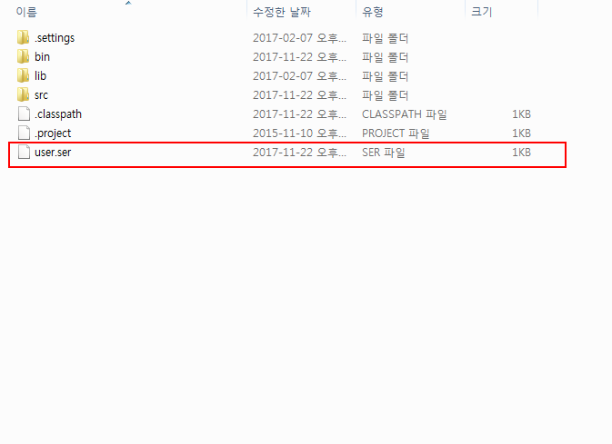
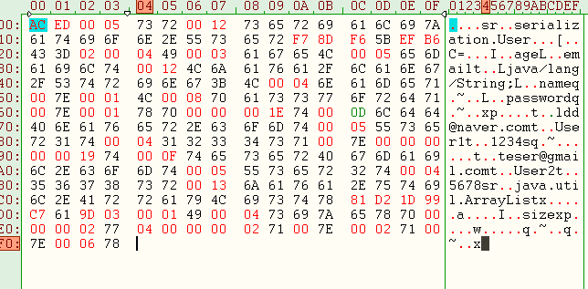

직렬화/역직렬화 개념
Table of Contents
1 개념
직렬화 : 메모리 상에 존재하는 객체를 어떤 데이터 포맷으로 변환하는 것 (나중에 쓰기위해)
직렬화 개념은 Java에만 있는가?
직렬화는 대부분의 언어에서 지원한다. 1
역직렬화는 반대 : 데이터 포맷을 입력받아서 객체를 다시 만들어내는 것
2 왜 필요한가? / 언제쓰이는가?
- 데이터로서 보존할 때
- 통신할 때
- 예를들면, JSON 이나 XML형식으로 표현된 문자열도 직렬화의 한 예이다.
- 또한, 각 언어별로 직렬화 메카니즘이 존재. 이 때는 별도의 포맷으로 변환된다.
3 JAVA에서 직렬화/역직렬화하는 방법
package serialization;
import java.io.Serializable;
/**
* @brief :
* @author : Jae-Woong Moon(mjw8585@gmail.com)
* @Date : 2017. 11. 22.
*/
public class User implements Serializable{
private String name;
private String password;
private String email;
private int age;
public User(String name, String password, String email, int age){
this.name = name;
this.password = password;
this.email = email;
this.age = age;
}
public String toString(){
return "(" + name +", " + password + ", " + email + ", " + age + ")";
}
public String getName() {
return name;
}
public void setName(String name) {
this.name = name;
}
public String getPassword() {
return password;
}
public void setPassword(String password) {
this.password = password;
}
public String getEmail() {
return email;
}
public void setEmail(String email) {
this.email = email;
}
public int getAge() {
return age;
}
public void setAge(int age) {
this.age = age;
}
}
package serialization;
import java.io.BufferedInputStream;
import java.io.BufferedOutputStream;
import java.io.FileInputStream;
import java.io.FileOutputStream;
import java.io.ObjectInputStream;
import java.io.ObjectOutputStream;
import java.util.ArrayList;
/**
* @brief :참고 : http://flowarc.tistory.com/entry/Java-%EA%B0%9D%EC%B2%B4-%EC%A7%81%EB%A0%AC%ED%99%94Serialization-%EC%99%80-%EC%97%AD%EC%A7%81%EB%A0%AC%ED%99%94Deserialization
* @author : Jae-Woong Moon(mjw8585@gmail.com)
* @Date : 2017. 11. 22.
*/
public class TestClass {
private static final String path = "user.ser"; //프로젝트 루트에 저장됨.
public static void main(String[] args) {
serialize();
deserialize();
}
public static void serialize(){
try{
FileOutputStream fos = new FileOutputStream(path);
BufferedOutputStream bos = new BufferedOutputStream(fos);
ObjectOutputStream out = new ObjectOutputStream(bos);
User u1 = new User("User1", "1234", "ldd@naver.com", 30);
User u2 = new User("User2", "5678", "teser@gmail.com", 25);
ArrayList list =new ArrayList<>();
list.add(u1);
list.add(u2);
out.writeObject(u1);
out.writeObject(u2);
out.writeObject(list);
out.close();
System.out.println("직렬화 완료");
}catch(Exception e){
e.printStackTrace();
}
}
public static void deserialize(){
try {
FileInputStream fis = new FileInputStream(path);
BufferedInputStream bis = new BufferedInputStream(fis);
ObjectInputStream in = new ObjectInputStream(bis);
User u1 = (User) in.readObject();
User u2 = (User) in.readObject();
ArrayList list = (ArrayList) in.readObject();
System.out.println(u1.toString());
System.out.println(u2.toString());
System.out.println("count : " + list.size());
System.out.println(list.toString());
in.close();
} catch (Exception e) {
e.printStackTrace();
}
}
}
3.1 직렬화된 파일

3.2 헥스 에디터로 열어본 모습

4 기본지식편
4.1 직렬화된 객체 바이너리 분석
바이너리에 클래스에 대한 각종 정보를 나타내는 플래그를 포함한다.
- 필드의 타입, 직렬화되는 필드의 개수 등..
순서는 필드명, 타입, 값 순으로 저장된다는 것.
AC ED : 매직넘버
00 05 : 버전
73 72 : CONTENT ELEMENT (TCOBJECT, TCCLASSDESC) 나머지 데이터의 구조를 추론하는데에 쓰인다.
중요한 것은 스트림이 저장되는 것에도 분명히 문법이 있다는 것.
스트림에 쓰여진 각 오브젝트들은 핸들을 부여받는다.
핸들은 0x7E0000부터 시작한다. (스트림이 리셋되면 0x7E0000부터 다시 시작)
스트림안에 저장된 오브젝트는 로드되면 바로 인스턴스화 된다. 모든 스트림이 해석되기 전에…
이 말은 페이로드는 검증전에 역직렬화되고 실행된다는 것! 위험하구만!